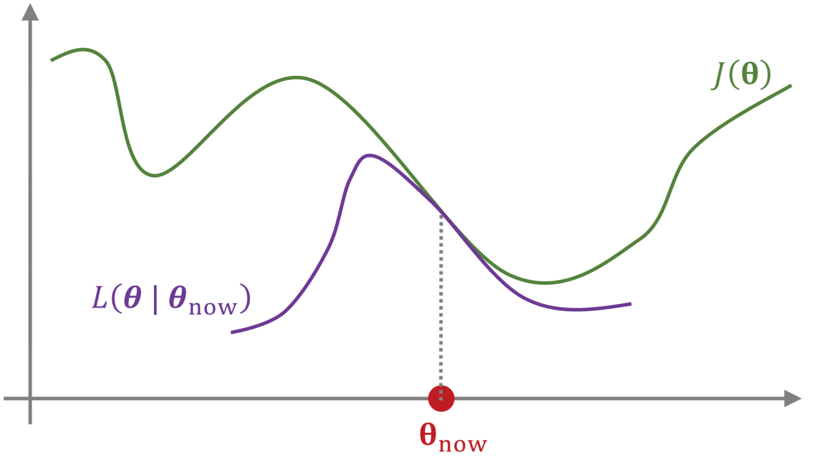
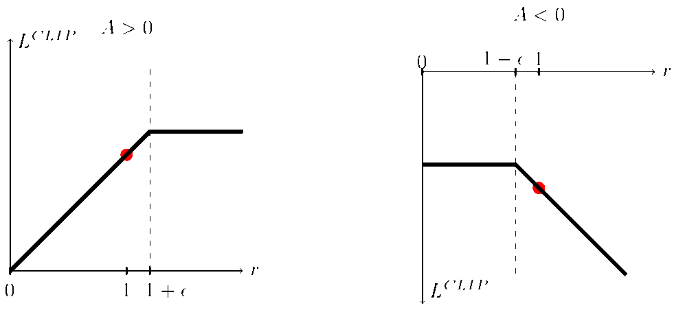

TRPO & PPO
Trust Region Policy Optimization（TRPO）
由于 actor-critic 方法直接使用策略梯度进行参数的更新，在步长较大时策略有可能会显著变差。为了保证策略在优化时性能的单调提升，即 J(θ′)≥J(θ)，将优化目标 J(θ)=Es0∼b0(⋅)[vπθ(t)(s0)] 重写为：
J(θ)=Es0∼b0(⋅)Ea0∼πθ′(⋅∣s0)Es1∼p(⋅∣s0, a0)Ea1∼πθ′(⋅∣s1)⋯EsT∼p(⋅∣sT−1, aT−1)EaT∼πθ′(⋅∣sT)[t=0∑Tγtvπθ(t)(st)−t=1∑Tγtvπθ(t)(st)]=−Es0∼b0(⋅)Ea0∼πθ′(⋅∣s0)Es1∼p(⋅∣s0, a0)Ea1∼πθ′(⋅∣s1)⋯EsT∼p(⋅∣sT−1, aT−1)EaT∼πθ′(⋅∣sT)[t=0∑Tγt(γvπθ(t+1)(st+1)−vπθ(t)(st))]
以上形式的轨迹通过 πθ′ 生成，计算参数更新前后优化目标的差值：
J(θ′)−J(θ)=Es0Ea0Es1Ea1⋯EsTEaT[t=0∑TγtR(st, at)]+Es0Ea0Es1Ea1⋯EsTEaT[t=0∑Tγt(γvπθ(t+1)(st+1)−vπθ(t)(st))]=Es0Ea0Es1Ea1⋯EsTEaT[t=0∑Tγt(R(st, at)+γvπθ(t+1)(st+1)−vπθ(t)(st))]=t=0∑TγtEs0Ea0Es1Ea1⋯EstEatEst+1[R(st, at)+γvπθ(t+1)(st+1)−vπθ(t)(st)]=t=0∑TγtEs0Ea0Es1Ea1⋯EstEat[qπθ(t)(st, at)R(st, at)+γEst+1∼p(⋅∣st, at)vπθ(t+1)(st+1)−vπθ(t)(st)]=t=0∑TγtEs0Ea0Es1Ea1⋯EstEat[qπθ(t)(st, at)−vπθ(t)(st)]=t=0∑TγtEs0Ea0Es1Ea1⋯EstEat[dπθ(t)(st, at)]
为了求解上式需要使用新策略 πθ′ 进行轨迹的生成，而后对目标函数进行计算与优化。但这种做法在现实中难以实现，因此在 πθ′ 与 πθ 非常接近时，可以将差值近似为：
L(θ′∣θ)=t=0∑TγtEs0∼b0(⋅)Ea0∼πθ′(⋅∣s0)Es1∼p(⋅∣s0, a0)Ea1∼πθ′(⋅∣s1)⋯Est∼p(⋅∣st−1, at−1)Eat∼πθ′(⋅∣st)[dπθ(t)(st, at)]≈t=0∑TγtEs0∼b0(⋅)Ea0∼πθ(⋅∣s0)Es1∼p(⋅∣s0, a0)Ea1∼πθ(⋅∣s1)⋯Est∼p(⋅∣st−1, at−1)Eat∼πθ′(⋅∣st)[dπθ(t)(st, at)]=t=0∑TγtEs0∼b0(⋅)Ea0∼πθ(⋅∣s0)Es1∼p(⋅∣s0, a0)Ea1∼πθ(⋅∣s1)⋯Est∼p(⋅∣st−1, at−1)Eat∼πθ(⋅∣st)[πθ(at∣st)πθ′(at∣st)dπθ(t)(st, at)]

此时可以通过旧策略 πθ 的采样数据来估计并优化新策略 πθ′，同时使用 KL 散度来衡量策略间的距离：
dKL(π, π′)=t=0∑TγtEst∼bt(⋅)DKL(π(⋅∣st) ∥ π′(⋅∣st))=t=0∑TγtEst∼bt(⋅)Eat∼π(⋅∣st)lnπ′(at∣st)π(at∣st)
此时优化问题近似为在一个 δ - KL 球（信任区域）中通过采样轨迹做近似优化：
θ′maxL(θ′∣θ)≈t=0∑Tγtdπθ(t)(st, at)πθ(at∣st)πθ′(at∣st)s.t. dKL(πθ, πθ′)≤δ
由于优化目标中的优势函数未知，因此需要对其进行估计，可以通过采样轨迹和价值函数进行近似：
dπθ(t)(st, at)=qπθ(t)(st, at)−vπθ(t)(st)=Ert+1rt+1+γEst+1vπθ(t+1)(st+1)−vπθ(t)(st)=Ert+1Est+1[rt+1+γvπθ(t+1)(st+1)−vπθ(t)(st)]⇐Δt(1)=Ert+1Est+1[rt+1+γEat+1qπθ(t+1)(st+1, at+1)−vπθ(t)(st)]=Ert+1Est+1[rt+1+γEat+1[Ert+2rt+2+γEst+2vπθ(t+2)(st+2)]−vπθ(t)(st)]=Ert+1Est+1Eat+1Ert+2Est+2[rt+1+γrt+2+γ2vπθ(t+2)(st+2)−vπθ(t)(st)]⇐Δt(2)=⋯=Ert+1Est+1Eat+1Ert+2Est+2⋯Ert+kEst+k[τ=0∑k−1γτrt+1+τ+γkvπθ(t+k)(st+k)−vπθ(t)(st)]⇐Δt(k)
在无限期规划下：
dπθ(st, at)=qπθ(st, at)−vπθ(st, at)≈δt(k)=τ=0∑k−1γτrt+1+τ+γkvπθ(st+k)−vπθ(st)
结合 TD(λ) 方法，利用不同时间步的时序差分项对优势函数进行估计：
dπθ(st, at)≈(1−λ)k=1∑T−t−1λk−1δt(k)+λT−t−1δt(T−t)⟶T→∞(1−λ)k=1∑∞λk−1δt(k)
在估计时使用的价值函数 vπθ(st) 可以通过 V 网络 vw(s) 进行近似和学习。
Proximal Policy Optimization（PPO）
由于 TRPO 带有信任域的约束，因此优化过程较为复杂，而 PPO 算法则将约束加入目标函数进行近似求解。
PPO-Penalty
PPO-Penalty 结合拉格朗日乘数法将原 TRPO 算法中的 KL 散度约束加入到了目标函数中：
L(θ′∣θ)=t=0∑TγtEs0Ea0Es1Ea1⋯EstEat[πθ(at∣st)πθ′(at∣st)dπθ(t)(st, at)]−βdKL(πθ, πθ′)=t=0∑TγtEs0Ea0Es1Ea1⋯EstEat[πθ(at∣st)πθ′(at∣st)dπθ(t)(st, at)−βDKL(πθ(⋅∣st) ∥ πθ′(⋅∣st))]
通过采样轨迹近似为：
L(θ′∣θ)≈t=0∑Tγt[πθ(at∣st)πθ′(at∣st)dπθ(t)(st, at)−βDKL(πθ(⋅∣st) ∥ πθ′(⋅∣st))]
此时优化问题变为无约束的 maxθ′L(θ′∣θ)，为了限制学习策略和之前一轮策略的差距，令：
βk+1←⎩⎪⎪⎪⎪⎪⎪⎪⎪⎨⎪⎪⎪⎪⎪⎪⎪⎪⎧2βk2βkβkdk<32ϵdk>23ϵ32ϵ≤dk≤23ϵ
其中 dk 为第 k 轮与第 k+1 轮的策略 KL 散度，ϵ 为设定好的超参数。
PPO-Clip
与 PPO-Penalty 类似，PPO-Clip 同样将策略更新的幅度约束加入到目标函数中，但约束的形式略有不同：
L(θ′∣θ)=t=0∑TγtEs0Ea0Es1Ea1⋯EstEatmin[πθ(at∣st)πθ′(at∣st)dπθ(t)(st, at), clip(πθ(at∣st)πθ′(at∣st), 1−ϵ, 1+ϵ)dπθ(t)(st, at)]
其中 ϵ 为超参数，通过采样轨迹可以近似为：
L(θ′∣θ)≈t=0∑Tγtmin[πθ(at∣st)πθ′(at∣st)dπθ(t)(st, at), clip(πθ(at∣st)πθ′(at∣st), 1−ϵ, 1+ϵ)dπθ(t)(st, at)]

其中，截断函数 clip(x, l, r)=max(min(x, r), l) 可以将 x 限制在区间 [l, r] 内，外层的 min 限制了：
| 情况 |
限制 |
| dπθ(t)(st, at)>0 |
πθ(at∣st)πθ′(at∣st)>1+ϵ 时，该项梯度退化为 0 |
| dπθ(t)(st, at)<0 |
πθ(at∣st)πθ′(at∣st)<1−ϵ 时，该项梯度退化为 0 |